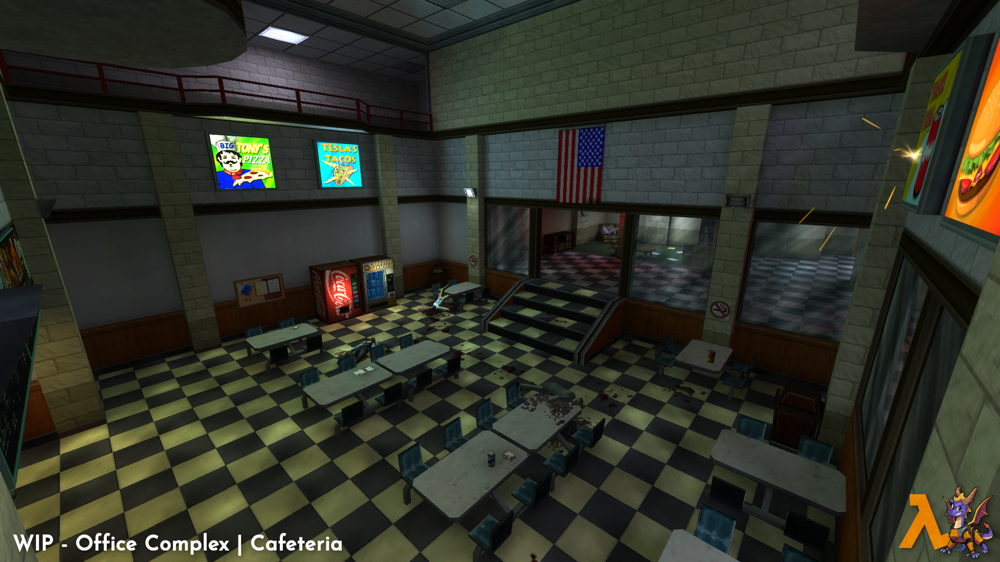
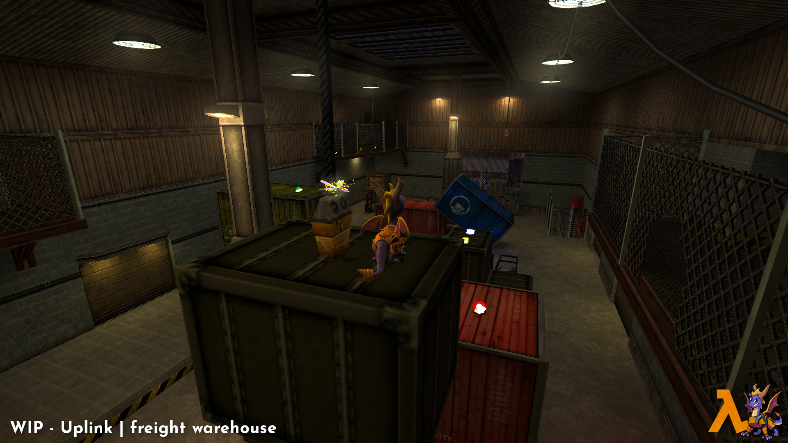
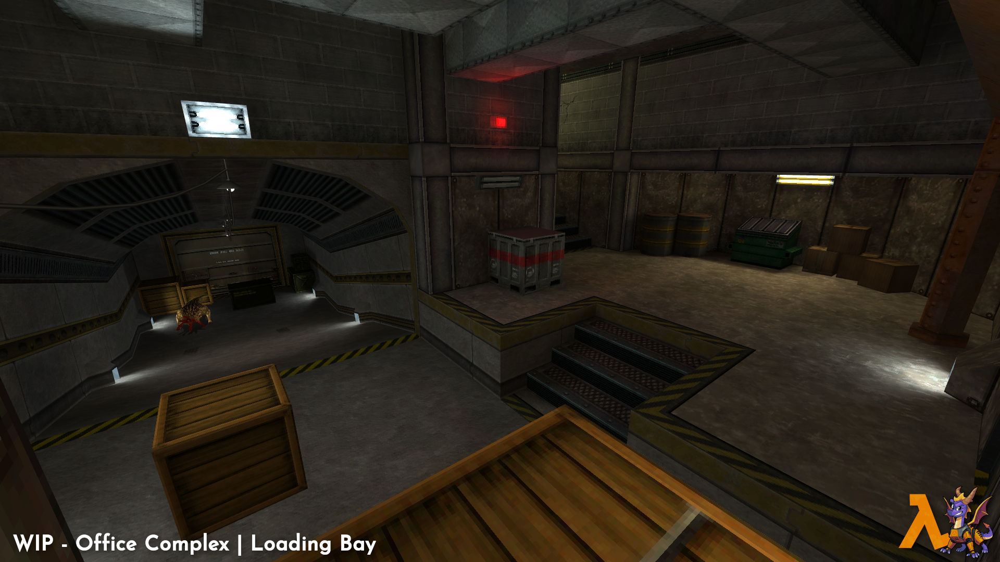
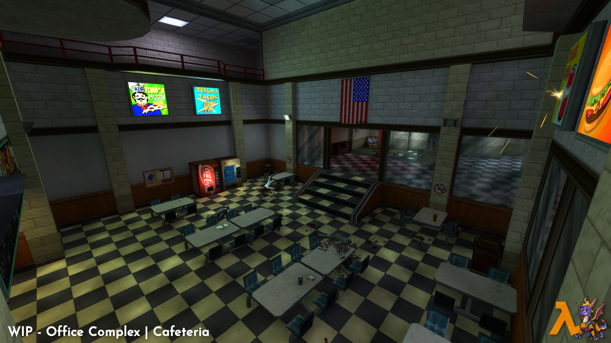
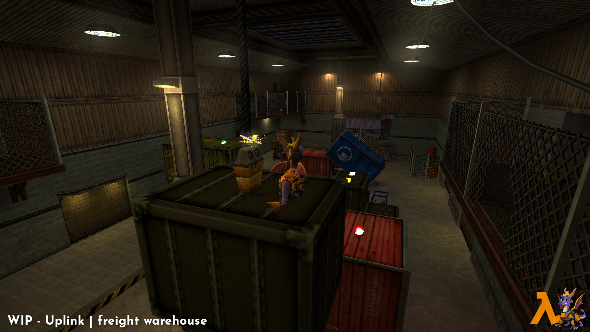
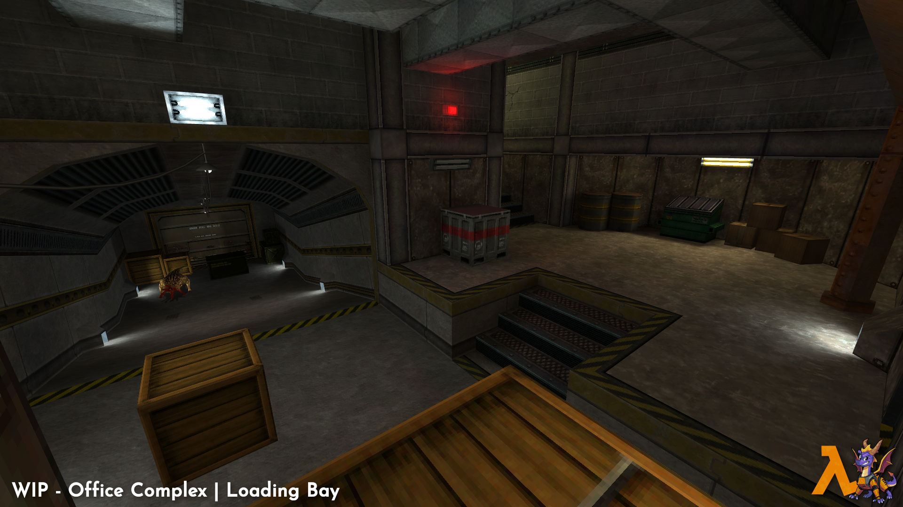

HALF-LIFE
Year of the dragon is a crossover mod that brings the world of Spyro the Dragon to the Half-Life universe!
 





CHARGE • THINK • FLAME • LIVE
Progress Update 7 - The end... for now
Waited an entire year once again to get an article out for this mod, and by this one's title it probably won't be the one people wanted to see… well most of you at least. Anyways, let's get onto what’s been going on that led to this decision of mine, and what this will mean for the future!
A new release!
I dropped a brand new Office Complex demo featuring completely remade maps, new models, and an overall bump in fidelity! Well, I’m about a year late on announcing that through an article but better late than never I suppose. Anyways, at the start of 2022 I released a new trailer for the mod, and then towards the end of January I released a new demo.
Yes, I got the date wrong! 2020 never happened. Anyways, Mitch over at Lambdageneration, Escalation, and many more made some videos on it which I’ll link right now!
It was also streamed and played by many others so thank you to all of you who downloaded the mod, streamed it, and reviewed it, I always appreciate it!I should also point out the ‘In memory of’ at the end of the chapter. People weren’t sure who that was, and I never really addressed it until now but it was my father. Our family lost him at the end of 2020 and I wanted to leave something in for him since he was not only a parent, but a mentor and someone who was always interested in what I was working on.If you haven’t played the new demo yet you can download it with the link right below this. You don’t even need Half-Life. Just download and play!
The start of Uplink!
With the new code base created, the new fidelity set, and the updated Office Complex demo out of the way, the next thing I wanted to do is create the next chapter, and I felt Uplink would fit that just fine. I also thought with the amount of players for this mod not being familiar with Spyro, a reconfigured hazard course would be a good way to teach new players how to control this not first person character. Here’s some wip media for what that’s shaping out to be.


There’s also some updates to the previous chapter with new compiled maps that added in a baked ambient occlusion effect that I find just delightful to look at.


I also added in a boss fight to the Office Complex chapter with a familiar creepy cut enemy from our favorite Valve dev, Ted Backman!
And alongside some bosses I wanted the power ups from the Spyro games to make an appearance. I have a wip shot of the ice breath power up here.

With all these wip shots and additions you might be wondering why am I putting the brakes on the project.
Why the end then?
After starting this project late 2017 when it was merely just a proof of concept for creating a functional 3rd person platformer in Goldsrc, it has grown so much since then. Now in its 5th year in development my own interest in the project has just started to wane. I have taken small breaks from the project in the past but I kept returning almost immediately. This along with the amount of time I’ve spent on this project when I originally didn’t even think I was going to might be one of the reasons for the decline in interest.There has also been an increase in people showing no other interest in the project other than the maps, and simply wanting to write off the entire mod as a gimmick which doesn’t exactly inspire me to continue either. So much so that even though I made a release this year along with other updates I didn’t even care to campaign for this mod in MOTY.Now I slapped on a “...for now.” with this article so I do not plan on fully killing off this mod. I’d still like to see this mod to the end in one way or another, but to prevent a complete collapse in interest it would be best to truly stop work on this for a while and do something else. Speaking of doing something else…Since the start of at least 2021 I’ve been having a growing itch to do something different so I started just experimenting with different game ideas. All of these are in Xash3D and are of a horror doom style fps, a n64 styled fps, a Mario FX prototype, and a Wolf styled fps.


There was one other idea I started in early 2022 that originally began as a fall back idea for this mod in the event it got hit with a C&D from Activision, Valve, or some other party. The concept for this kept the original one from YOTD with a cute cartoon character in a harsh, gritty, and semi-real world environment. I thought that clash of styles helped out this mod, and something similar in an original game may work as well.The idea in question is what I’ve decided to focus my attention on. While the other ideas I had above could also easily be turned into something, and I still have an interest in them somewhat, I don’t really have an idea on where to take most of them currently so I’d rather leave them shelved until I do.
That damn fox!
is the current working title for the project at the moment. Similar to the other ideas I talked about above, this project is still early on, and I still have a lot to experiment with before things become more set in stone. Current plans are to have a moveset similar to YOTD but with more influence from other games like Ratchet & Clank, and Jak & Daxter. Along with that would be a focus on platforming, and gunplay, all of which still have to be worked on, and worked out. I also plan on getting a prototype done sometime in the near future and to let people give it a go to see how well it works. That way if it turns out to be a flop, I can go to one of the previous ideas I had or do something completely different. While there isn’t much media at the moment, I’ll post what I have so this section isn’t just text.
Wrapping up!
I’d like to thank everyone who stuck around to read the whole thing, and to those who are interested in following what I do I’ll have my discord posted right below so you can hop in there and see what I may be doing.
With YOTD going into a hibernation I won't have much of a presence on Mod DB for a while. I might open up an IndieDB for the fox game once it reaches that point. For those of you who have been following this mod I’d like to thank all of you for the love and support, and I hope you are still around once it makes its return! Until next time!
The Adventure Will Continue...